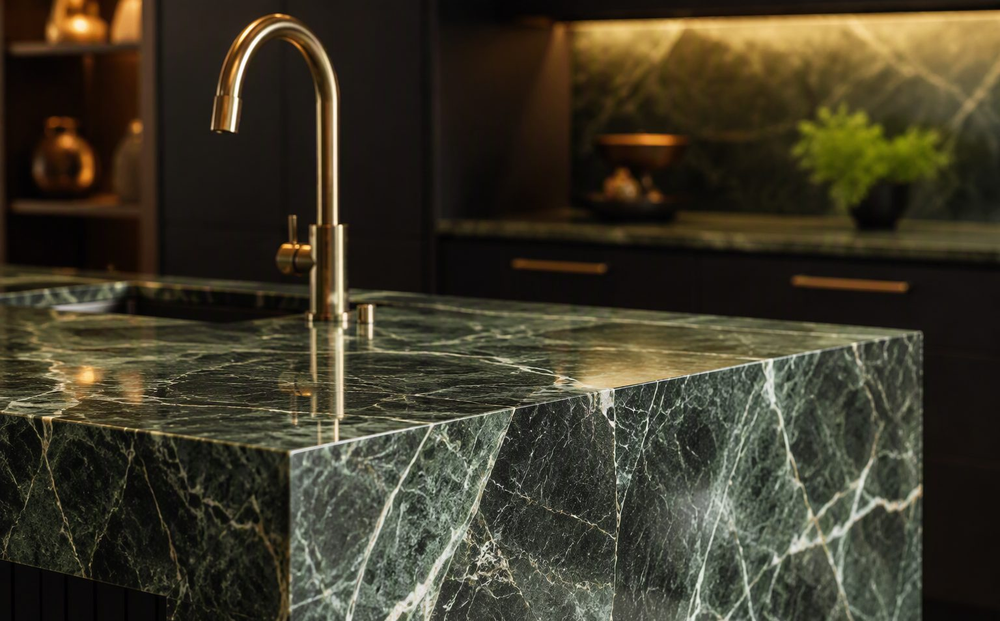
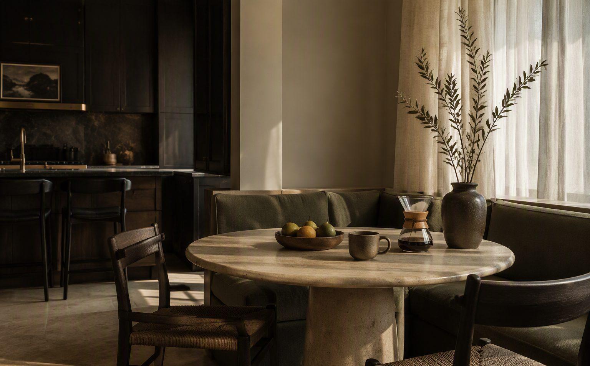

Проект / 002
Кухня „Градина“
Кухня, в която зеленият мрамор е главният герой.
Островът от зелен мрамор с драматични жилки е сърцето на тази кухня. Около него — матови черни фронтове, димно стъкло и месингови детайли, които ловят светлината.
Скритото LED осветление под шкафовете превръща готвенето вечер в ритуал, а ъгълът за закуска с гледка към градината прави сутрините по-бавни.


Следващ проект